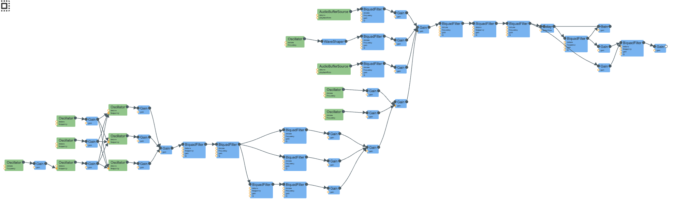

MOO MACHINE
press for a moo!! ♡

# moo
HOW I MADE THE COW SOUNDwith web audio ✿
okay. this was way harder than i thought.
i was trying to recreate the sound of a single cow mooing — a low, drawn-out "mmmoooooo". i've never listened to so many moos in so little time. it's roughly 1-2 seconds long, around 110-130 Hz, starts with a closed nasal "mmm," opens up into a long "ooooo" vowel, and usually ends with a slightly creaky/strained quality as the cow runs out of breath.
cows are actually really hard to synthesize. they have a rumbly throaty resonance plus a nasal hum plus a vowel formant plus a creaky thing at the end and the pitch wobbles all over. my early attempts kept landing somewhere between a horn and a bee. which definitely didn't sound like a cows.
SIGNAL FLOWthe whole graph
here's what the audio graph ended up looking like (using webaudio's chrome extension):

the structure follows a SOURCE-FILTER MODEL, which is the standard way of synthesizing voice. the idea is that real speech (and animal vocalizations) can be decomposed into:
(1) a SOURCE — the glottal tone from the vocal folds, and
(2) a FILTER — the resonances of the vocal tract that shape that source into different vowel and consonant sounds.
i kept that split as the backbone of the patch and then layered more synthesis techniques on top of it. i will walk through them here.
SYNTHESIS TYPE 1: SUBTRACTIVEthe source + formants
the bottom-left chunk of the signal flow graph is subtractive synthesis. before i wrote any of it i actually had to watch a video on how formants work (i really want to take a linguistics class now!) vocal-tract resonances aren't generated and instead they're carved out of a noisy/buzzy source by the shape of your throat and mouth. i used bandpass filters as my formants instead of trying to add sine waves at those frequencies (which was my first instinct).
i started with three detuned sawtooth oscillators (the bottom row of green Oscillator boxes) — sawtooths for the buzzy waveform that real vocal folds produce. detuning them thickens the source so it doesn't sound like an instrument.
const glottal1 = audioCtx.createOscillator(); glottal1.type = 'sawtooth'; applyPitch(glottal1); const glottal2 = audioCtx.createOscillator(); glottal2.type = 'sawtooth'; glottal2.detune.value = 9 + Math.random() * 6;
the three sawtooths get mixed and then sculpted by a chain of biquad filters — this is where i'm removing frequencies rather than synthesizing them additively. specifically:
(1) a LOWPASS at ~1700 Hz to tame the upper buzz of the saw.
(2) a NASAL FILTER (another lowpass) that starts at 400 Hz and opens up to 3200 Hz — this is how i got the "mmm → ooooo" mouth-opening effect over the first 150ms.
(3) three parallel BANDPASS FILTERS (visible in the middle of the graph as the three-way split) tuned to ~320, ~650, and ~1100 Hz. these are the formants — the resonant peaks of the vocal tract that turn the buzzing noise into a recognizable "ooo" vowel.
const formant1 = audioCtx.createBiquadFilter(); formant1.type = 'bandpass'; formant1.frequency.value = 320; formant1.Q.value = 11; // high Q = narrow ringy peak
i picked F1-heavy (F1 boosted to 2.4x, F2 around 0.45x, F3 at 0.1x) because real cow moos sit in the body register. putting emphasis in the lowest formant is what makes it sound like the noise is coming out of a large animal instead of a person. i also kept the nasal filter quite aggressive at the start — i pulled this trick from the "fix a nasally voice" tutorial about how producers make nasal voices on vocals. this idea works in reverse for synthesizing the "mmm" part of "mmmmoooo."
SYNTHESIS TYPE 2: MODULATION (FM/AM)the wobble + tremolo
the two oscillators stacked in the middle of the graph are AM tremolo modulators. the FM pitch modulators are low-frequency modulators — their outputs go into the frequency param of the glottal sources (FM) and the gain param of the formant mix (AM). this is how i got the organic vibrato and tremolo.
my first attempt at vibrato was a single sine LFO and it sounded very fake. like an opera singer cow. real cows have this slightly chaotic pitch wander that isn't periodic. the fix was running three independent FM oscillators at different rates beating against each other, and then modulating the rate of one of them so it isn't even periodic itself:
// fast wobble (~5 Hz) wobble1.frequency.value = 4.5 + Math.random() * 1.5; // medium drift (~2 Hz) wobble2.frequency.value = 1.8 + Math.random() * 1.4; // slow wander (~1 Hz) wobble3.frequency.value = 0.7 + Math.random() * 0.5; // AM modulator on the formant bus = tremolo am1.frequency.value = 2.6 + Math.random() * 1.4; // AND a meta-modulator on wobble1's RATE rateMod.connect(rateModGain).connect(wobble1.frequency);
the AM modulators ramp in over time so the moo gets more wobbly as it goes because a lot of cow samples i listened to sounded like it was getting strained near the end of its breath. i went with modulation here because it operates at a different timescale than the source/filter chain (sub-audio rate vs audio rate). this is how the instability of the noise sounded more organic rather than a rigid synth voice.
SYNTHESIS TYPE 3: NOISE / SAMPLE-BASEDbreath & texture
the two AudioBufferSource nodes near the top of the graph are noise buffers. one is white noise filtered through a bandpass at ~900 Hz (the raspiness of the moo), and the other is a pink-ish noise burst that plays only at the beginning, and only ~55% of the time, which simulates the cow drawing in air before making noise.
the breath layer was something i added after watching making vocals breathier once i added the bandpassed noise underneath the formant chain, the moo bascically came to life.
function createBreathBuffer(duration) { const buffer = audioCtx.createBuffer(1, bufferSize, audioCtx.sampleRate); const data = buffer.getChannelData(0); let last = 0; for (let i = 0; i < bufferSize; i++) { const white = Math.random() * 2 - 1; last = 0.97 * last + 0.03 * white; // simple LP = pink-ish data[i] = last * 1.5; } return buffer; }
SYNTHESIS TYPE 4: WAVESHAPINGthe vocal fry
the WaveShaper in the top middle of the graph is the vocal fry layer. real cow moos often end with a creaky quality, and i couldn't get this from the source-filter chain alone so it needed an actual nonlinear distortion.
so i ran a square wave at half the fundamental frequency through a tanh waveshaper, then a bandpass at 280 Hz, faded in over the last 30% of the moo:
fryOsc.type = 'square'; applyPitch(fryOsc, 0.5); // HALF frequency = sub-harmonic // soft-clip distortion curve const curve = new Float32Array(256); for (let i = 0; i < 256; i++) { const x = (i / 128) - 1; curve[i] = Math.tanh(x * 4); } fryShaper.curve = curve;
waveshaping added harmonic distortion which was a new frequency content above the fundamental that wasn't there before. the half-pitch created sub-harmonic rumble that creaky human/animal voices produce.
FINAL STAGE: HOLLOW CHAMBERdelay-based feedback
the right side of the signal graph (the Delay node with the loop coming back into itself) is a short feedback delay line simulating the cow's chest/throat as a resonant cavity. without this, the moo sounded like it was happening in front of a cow rather than inside one.
const cavityDelay = audioCtx.createDelay(0.08); cavityDelay.delayTime.value = 0.012 + Math.random() * 0.012; cavityFeedback.gain.value = 0.45; // 45% feeds back // the loop: delay → filter → gain → back into delay tubePeak.connect(cavityDelay); cavityDelay.connect(cavityFilter); cavityFilter.connect(cavityFeedback); cavityFeedback.connect(cavityDelay);
delay times of 12-24ms are short enough that you don't perceive an echo. the timing was the difference between a "delay effect" and a "small room". this finally when it stopped sounding like a synth and started sounding like a cow.
THE RANDOMIZATION LAYERevery moo is different
the final piece, which isn't really a synthesis type but is the thing that makes everything sound real, is randomization on every moo click. duration is random between 0.9-2.4s, center pitch picks from 95-135 Hz (so different cows have different voices), and each moo picks one of SIX pitch contour archetypes:
const archetype = choice(['single_arc', 'double_bump', 'late_rise', 'early_peak', 'sagging', 'plateau']);
same idea for the amplitude envelope — random peak position (35-75% through), random plateau width, random tail shape (quick / medium / long / creaky). the formant frequencies, filter Q values, vibrato rates, breath-onset chance, and fry intensity all get re-rolled per click.
this was major for making the noise sound real: realism comes from variation.
FINAL THOUGHTS
it was really hard to make the cow sound realistic but i learned so many ways that filters can shape sound. different techniques for different natural phenomena.
that's how i made the cow sound!! also you can toggle the "babbling brook" button to hear the cow by babbling brook. moooooooo ♡♡♡